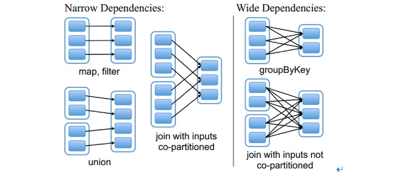
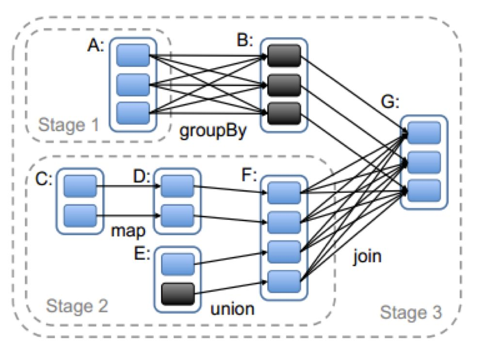
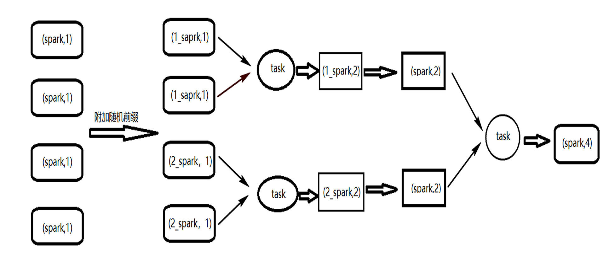

一个数据处理过程一般可划分为3个大的阶段：获取数据源，执行数据预处理，执行指标计算，输出处理结果；
那Spark的一个离线计算的作业执行流程是什么样的呢？
数据源获取
spark的数据源
hdfs文件
如json,csv,parquet等格式的数据源都可以直接读取为DataSet;1
Dataset<Row> people = spark.read().json(“data/people.json“);
hive表
1 | Dataset<Row> people = spark.sql(“SELECT * FROM people“); |
一般都会将数据转换为hive表后再进行后续的预处理，因为hive表方便用SparkSQL进行探索性分析，在不清楚数据情况前，这很有用；
RDBMS表数据
通过JDBC连接将数据库的表作为数据源
1 | Dataset<Row> people = spark.read.format("jdbc") |
执行数据处理
数据处理过程通常分2个部分：预处理（缺失值，重复值，异常值处理，聚合等操作），业务指标计算；预处理结果会以中间表的形式存在，用于作业恢复，最终处理完成后再删除。
Spark中1个Application的执行主要涉及Client、ClusterManager、Worker3个角色，具体涉及以下术语
- ClusterManager：在集群上获取资源的外部服务（如Standalone，mesos，yarn）；
- Client：用户提交Application的客户端
- Driver：运行Application的main函数，并创建SparkContext；
- Application：Spark的应用程序，包含1个Driver程序和若干Executor；
- SparkContext：Spark应用程序的入口，负责调度各个运算资源，协调各个Worker上的Executor；
- Job：SparkContext提交的具体的Action操作，常由Action触发；
- RDD：弹性分布式数据集，是Spark最核心的类和模块；
- DAGScheduler：根据Job构建基于Stage的DAG，并将Stage提交给TaskScheduler
- TaskScheduler：将Taskset提交给WorKer集群运行并返回结果；
- Worker：集群中运行Application代码的物理节点，可运行n个Executor进程；
- Executor：负责运行Task，将数据存储在内存或磁盘，每个Application都会申请各自的Executor来处理任务
- Task：运行在Executor上的工作单元
下面主要详细描述Spark中一个Job（作业）的执行过程：
Driver任务提交流程
Stage的划分
用户提交的计算任务是由多个 RDD 构成的 DAG， 当 RDD 在转换时需要进行 Shuffle，Shuffle 的过程中就将这个 DAG 划分成了多个 Stage。由于后面的 Stage 依赖前面的 Stage 提供 Shuffle 的结果，因此不同的 Stage 不能并行计算。
那么 RDD 在哪些操作时需要进行 Shuffle 呢？这里涉及到 RDD 的两种依赖关系：宽依赖与窄依赖。

窄依赖（narrow shuffle deps）：一个RDD 每个 partition 依赖固定数量的parent RDD的partition，所以可以通过 Task 来处理这些 partition。而且这些 partition 相互独立，所以 Task 可以并行计算；宽依赖（wide shuffle deps）：一个RDD的每个partition依赖parent RDD的所有partition；当前RDD必须等待上一个RDD计算完成，所以需要分割Stage；
举例说明 Stage 的划分过程

如图，从触发 Action 的 RDD G 开始划分，G 依赖 B 和 F，处理 B 和 F 的顺序是随机的，假设先处理 B：
- G-B：由于 G 和 B 是窄依赖关系，可以划分到同一个 Stage3 ；
- G-F： 由于F 和 G 是宽依赖关系，所以将 F 划分到一个新的 Stage2；
- F-D-C或F-E：可合并的窄依赖关系，所以将CDE与F 划分到同一个的 Stage2；
- B-A：B和 A 是宽依赖关系，所以将A 划分到一个新的 Stage1；
接着以 Stage 1 为例看它的计算方式，如图所示 RDD A 有3个 Partition，因此会生成3个ShuffleMapTask，这3个 Task 会把结果输出到3个 Partition 中。
Executor任务执行流程
运行过程中RDD可以自动容错：Task异常恢复，慢任务备份；也可对关键数据手动执行checkpoint备份，对重复利用的小数据执行cache提升处理速度；
注意在得到计算结果发回 Driver 的过程中，如果文件太大会被直接丢弃；
可以通过
spark.driver.maxResultSize来设定大小；实际生产过程中都不会将大量的计算结果返回给Driver端；
输出处理结果
处理结果通常输出到hive表中
1 | ds.write.saveAsTable('dbname.tablename') |
问题记录
如何处理Spark计算过程中的数据倾斜问题？
问题描述：大量的相同key在被分配到了同一个partition，导致1个executor耗时长，其他executor空闲，造成资源浪费；违背并行计算的初衷；
示例场景：groupBy或reduceByKey等聚合算子生成的RDD可能会导致数据倾斜；
解决方案：

- 给每个partitionKey加上一个随机数后再聚合；
- 聚合后的数据map去掉前缀；